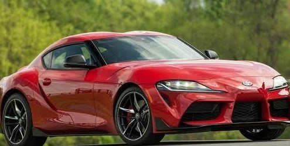
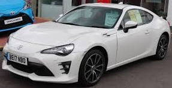
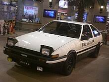
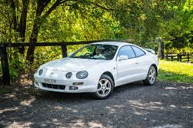

Toyota GR Supra

Prestaciones
El motor es 2.0 L y cuatro cilindros en línea
Potencia del motor 340 CV
Par motor 500 Nm
Aceleración
(0-100 km/h) 4,3 segundos
Velocidad máxima
(Limitada electrónicamente) 250 km/h
Precio: Desde 1.444 millones MXN
Toyota GT86

Prestaciones
El motor atmosférico tipo bóxer de 4 cilindros y 2.4 L
200 caballos de potencia
205 Nm (151 lb-ft) de par motor.
aceleracion 6 segundos de 0 a 100.
Velocidad máxima: 226
precio: 611,400 MXN
Toyota AE86

Prestaciones
motor de 4 cilindros en línea 4A de 1452 a 1587 cm³ (1,5 a 1,6 L)
potencia del motor 70 a 130 CV
par de motor 115 a 149 Nm
aceleracion 0-100 km/h en 8.3 s
velocidad maxima 196 km/h
precio: de 503259.73 MXN para abajo
Toyota Celica

Prestaciones
MOTOR zz-FE de 1.8 litros, cuatro cilindros VVT-I
potrenciua del mootor de 143cv
par de motor de 302 Nm.
aceleracion de 0 a 100 km/h en 6.3 s
velocidad maxima 245 km/h
precio: 55,000 MXN
,jpg.png) MENU
MENU